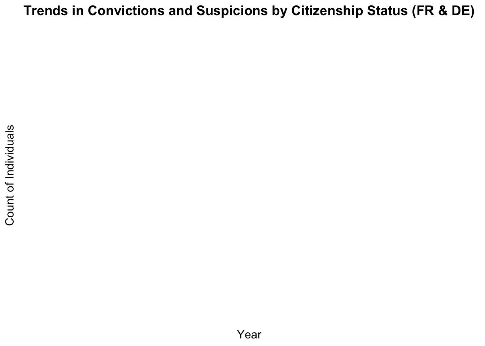

── Column specification ────────────────────────────────────────────────────────
Delimiter: ","
chr (8): countryname, edate, partyname, partyabbrev, candidatename, corpus...
dbl (167): country, oecdmember, eumember, date, party, parfam, coderid, manu...
ℹ Use `spec()` to retrieve the full column specification for this data.
ℹ Specify the column types or set `show_col_types = FALSE` to quiet this message.
Rows: 6160 Columns: 7
── Column specification ────────────────────────────────────────────────────────
Delimiter: ","
chr (2): country_name, data_type
dbl (4): country, dalton, left_ideology, right_ideology
date (1): date
ℹ Use `spec()` to retrieve the full column specification for this data.
ℹ Specify the column types or set `show_col_types = FALSE` to quiet this message.
Data Management
1- Link to GitHub https://github.com/alexmar313/Data-Management-Project.git
2- Downloading links for data https://eupoliticalbarometer.uc3m.es/api/ideologyDownload https://manifesto-project.wzb.eu/down/data/2024a/datasets/MPDataset_MPDS2024a.csv https://ec.europa.eu/eurostat/databrowser/view/crim_just_ctz/default/table?lang=en
3- Websites links from which data was extracted https://eupoliticalbarometer.uc3m.es/dashboard/ideology https://manifesto-project.wzb.eu/datasets https://ec.europa.eu/eurostat/databrowser/view/crim_just_ctz/default/table?lang=en
4- Data description Eurostat Crime and Criminal Justice Dataset The Eurostat Crime and Criminal Justice dataset provides yearly statistics on the citizens and non-citizens within the justice system across European Union member states, covering the period from 2008 to 2022. It includes data on suspicion and conviction rates per 1,000 inhabitants, offering insights into both the number of individuals suspected of crimes and those convicted. By distinguishing between citizens and non-citizens, this dataset sheds light on potential disparities in how these groups are treated within the legal system. Such information is crucial for understanding systemic inequities and evaluating the impact of policies on different demographics.
Manifesto Project Dataset The Manifesto Project dataset offers a systematic analysis of political party manifestos across various countries, including EU member states. Spanning elections from 1946 to 2017 (with country-specific coverage), it captures the percentage of text devoted to key themes such as “law and order,” “national security,” and “national values.” This dataset is particularly valuable for studying the evolution of political discourse over time and across contexts. The dataset’s coding of text into quantifiable measures makes it a powerful tool for understanding the role of party platforms in shaping public opinion and influencing policy. Its detailed historical scope enables longitudinal studies of political ideologies and their relationship with contemporary governance trends.
EU Political Barometer Dataset The EU Political Barometer dataset provides bi-monthly data on public opinion and political preferences across EU member states from 2019 to 2023. It tracks ideological shifts, political attitudes, and public reactions to major societal events and political campaigns. Key indicators include changes in support for various ideologies and parties, offering a granular view of how public sentiment evolves over time. This dataset is particularly useful for analyzing short-term trends and understanding the relationship between political discourse and public opinion. By examining fluctuations in attitudes during specific events or election campaigns, we can identify patterns in voter behavior and ideological alignment. Its frequent updates make it a critical resource for real-time political analysis and policy evaluation.
Warning: There was 1 warning in `mutate()`.
ℹ In argument: `geo = countrycode(geo, origin = "iso2c", destination =
"country.name")`.
Caused by warning:
! Some values were not matched unambiguously: EL, XK
ggplot(crime |>filter(geo %in%c("FR", "DE")), aes(x = TIME_PERIOD, y = values, color = Category, group = Category)) +geom_smooth(se =FALSE, size =1.5, method ="loess") +labs(title ="Trends in Convictions and Suspicions by Citizenship Status (FR & DE)",x ="Year",y ="Count of Individuals",color ="Category" ) +theme_minimal() +theme(plot.title =element_text(hjust =0.5, size =14, face ="bold"),axis.title =element_text(size =12),legend.title =element_text(size =12) )
Warning: Using `size` aesthetic for lines was deprecated in ggplot2 3.4.0.
ℹ Please use `linewidth` instead.

7- A description of the research question:
Research question: The association between immigration and crime suspicions and convictions in the EU, considering political ideology
The research explores the relationship between immigration status and crime outcomes (suspicion and conviction rates) in EU countries. It questions whether claims by political entities, particularly right-wing parties, that immigration drives up crime rates hold true, and explores how other intervening factors, such as the demographic profile of immigrants, might contribute to this perception.
Background context and relevance Right-wing political narratives often link immigration with rising crime rates without acknowledging broader contextual factors. For example, statistical evidence suggests that most crimes are committed by young males—a group overrepresented among immigrant populations. Across the EU, a significant proportion of non-citizens are young males: non-national men aged 20–49 constitute 29% of their demographic group, compared to 18% for nationals. Additionally, 54–60% of unauthorized immigrants are male, with a majority under 35 years old. Such demographic realities could skew perceptions of immigrant involvement in crime when not carefully controlled for. *Source: https://ec.europa.eu/eurostat/web/interactive-publications/migration-2023
This research aims to integrate crime statistics and demographic data with measures of political ideology to disentangle these associations. By doing so, it challenges simplistic narratives and aims to explore whether shifts in political rhetoric influence crime outcomes or merely exacerbate perceptions of immigrant criminality.
Data and methodology 1. Crime Data: Eurostat provides comprehensive data on annual suspicion and conviction rates per 1,000 residents, disaggregated by citizenship (non-citizens vs. citizens) for 2008–2022. This allows for trend analysis of disparities between groups.
Political ideology data:
Manifesto Project Database: Tracks the content of political party platforms during election years, focusing on themes such as “law and order” and “security.”
EU Political Barometer: Captures public opinion on political ideologies monthly from 2019–2023.
A Difference-in-Differences (DiD) approach will compare changes in crime-related outcomes before and after election periods with shifts in ideological rhetoric. Non-election years serve as a control group, isolating the causal effect of political discourse.
Core Issues Addressed The research will investigate: 1. Whether increased suspicion of immigrant crime correlates with heightened right-wing rhetoric. 2. If young male overrepresentation among immigrants, rather than immigrant status itself, explains these crime rates.
3. Do conviction rates—representing judicial outcomes—reflect ideological trends, or are they more stable and less subject to political influence?
Significance and expected outcomes
This study seeks to clarify how political discourse shapes public perceptions and crime outcomes involving immigrants. Preliminary hypotheses suggest that while suspicion rates rise in line with ideological shifts, conviction rates remain relatively stable, suggesting biases in suspicion rather than evidence-based outcomes. By emphasizing intervening factors like demographics, the research highlights the importance of nuanced policymaking and avoids perpetuating harmful stereotypes.